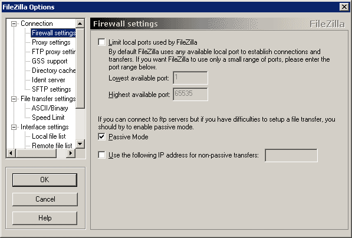

Firewall settings
Overview
Using the settings on this page, you can configure FileZilla to be compatible with your firewall.

| Limit local ports used by FileZilla | - | Enable this if your Firewall only allows applications to use a specific port range. If all ports within the specified range are already in use or if your firewall blocks applications from using these ports, you won't be able to connect to any ftp server behind your firewall. |
| Passive Mode | - | Enable passive mode. Without passive mode, the FTP server establishes a connection to your computer for transfers. With passive mode enabled, FileZilla establishes a connection to the server for transfers. Passive mode should be enabled when a firewall type is selected or if you can't accept inbound connections. |
| Use the following IP address for non-passive transfers |
- | If FileZilla fails to detect your ip address for active mode transfers, for example if you are behind a router, you can specify the ip address which should be used for active transfers. |
Contact your system administrator if you don't know the required information or if you have problems connecting through the firewall.